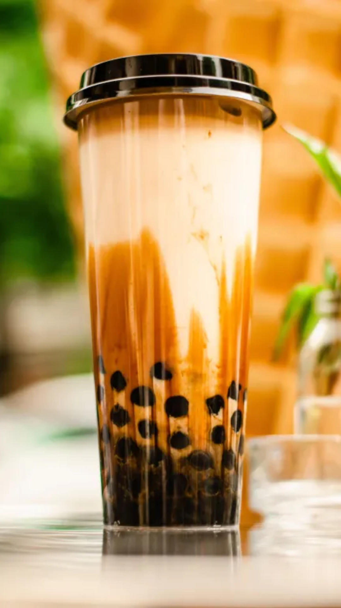
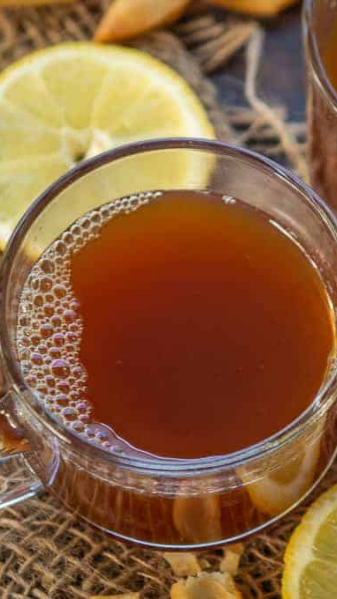
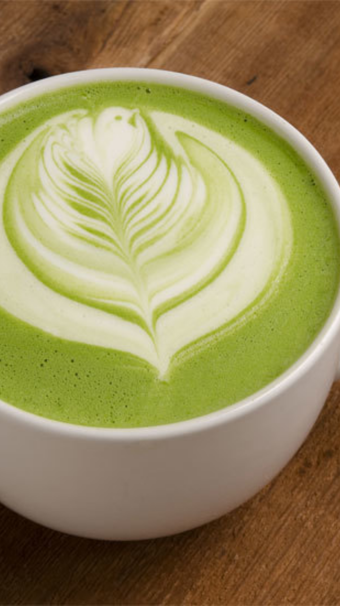

TeaTea is an aromatic beverage prepared by pouring hot or boiling water over cured or fresh leaves of Camellia sinensis, an evergreen shrub native to China as well as other East and Southeast Asian countries. After water, it is the most widely consumed drink in the world. |
||||
|---|---|---|---|---|
|  |  |  | ||
Milk TeaIt is a combination of black tea, milk, a sweetener of some sort, and tapioca pearls. |
Lemon TeaLemon tea is a low-sugar, low-calorie way to add a range of vitamins and minerals to your diet. Grating lemon zest into your tea also adds the peel's limonene. |
Macha TeaMatcha, like other green teas, contains a class of antioxidants called catechins. ... Studies have linked green tea to a variety of health benefits, like helping to prevent heart disease, type 2 diabetes and cancer, and even encouraging weight loss. |
||